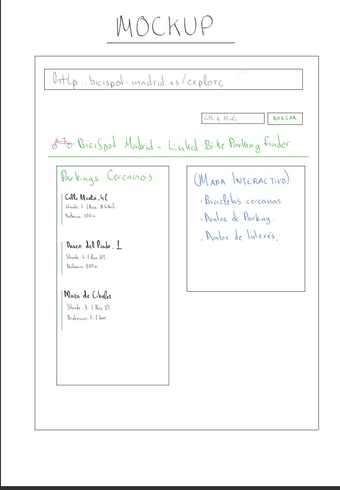

Application Requirements Specification
1. Vision and Goals
The goal is to create an application called BiciSpot Madrid. It is a web tool to help citizens find bicycle parking spots in Madrid, check the capacity of the racks, and see nearby points of interest using Linked Data from DBpedia and Wikidata.
2. User Requirements
- UR1: The user can search bicycle racks by district, neighborhood, or street name.
- UR2: The user can check the capacity and model of each bicycle parking spot.
- UR3: The application shows nearby points of interest (such as museums or monuments) retrieved from Wikidata or DBpedia.
- UR4: The user can view the location of the bike parking spots on a map.
3. User Interface Mock-up
Below is the mock-up of the user interface for our application:
